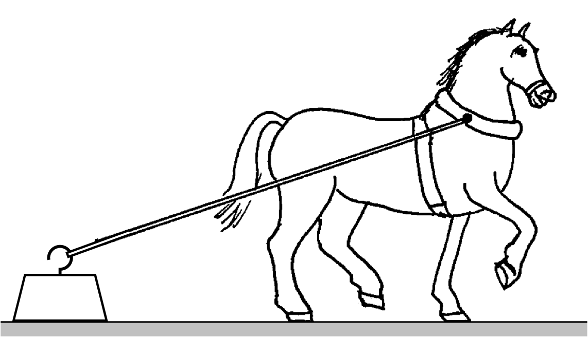

Aos 23 anos Isaac Newton
teve uma ideia inovadora que foi a inspiração para a sua
teoria da gravitação e da mecânica em geral. Newton pensou que assim
como uma maçã cai, devido à atração gravitacional da Terra, a Lua
também se encontra em queda livre sob a ação gravitacional da Terra. A
razão pela qual a queda livre da Lua não faz diminuir a sua distância
à Terra, como no caso da queda da maçã, é porque a Lua tem uma
velocidade horizontal muito elevada, de forma que em cada instante a
distância horizontal percorrida e a distância vertical da queda
descrevem um arco de círculo com raio constante. Com os dados
conhecidos na época para a distância entre a Terra e a Lua e o período
orbital da Lua, Newton calculou a distância vertical que a Lua cai por
unidade de tempo; comparando com a distância da queda de uma maçã,
descobriu que a força de atração gravitacional decresce inversamente
proporcional à distância ao quadrado.
4.1. Leis de Newton
As três leis de Newton
são a base da mecânica clássica, que permite estudar
desde o movimento dos objetos à nossa volta, até o movimento dos
planetas, estrelas e outros objetos distantes. As 3 leis foram
enunciadas de forma clara numa única página do livro escrito por
Newton em 1687 (Princípios Matemáticos da Filosofia Natural).
4.1.1. Lei da inércia
A primeira lei de Newton, denominada lei da
inércia,
foi enunciada por Newton no seu livro assim:
LEI I.
"Todo corpo mantém o seu estado de
repouso ou de movimento
uniforme segundo uma linha reta, se não for compelido a mudar o seu
estado por forças nele impressas.
Os projéteis continuam no seu movimento,
a menos que sejam retardados pela resistência do ar ou impelidos para
baixo pela força da gravidade. Um pião, cujas partes, pela sua coesão,
são continuamente desviadas dos seus movimentos retilíneos, não cessa
de rodar se não for retardado pelo ar. Os corpos maiores —
planetas e cometas — encontrando menos resistência nos espaços
livres, continuam os seus movimentos, retilíneos ou circulares, por
tempo muito maior."
Um sistema de referência em que se verifique a lei da inércia, é designado
por referencial inercial.
Considere-se o seguinte exemplo: uma esfera em repouso sobre uma mesa
horizontal, numa carruagem de um comboio que passa por uma estação com
movimento retilíneo uniforme.
Uma pessoa sentada na estação vê a esfera passar junto com o comboio,
com movimento retilíneo uniforme. No entanto, um passageiro sentado na
carruagem do comboio observará que a esfera está em repouso na mesa. A
estação e a carruagem do comboio são ambos referenciais inerciais e as
duas pessoas observam que o comportamento da esfera está de acordo com
a lei de inércia; uma das pessoas observa que a esfera mantém o seu
estado de repouso e a outra observa que mantém o seu movimento
retilíneo uniforme, porque não existem forças que a obriguem a alterar
o seu estado de repouso ou movimento uniforme.
Se o comboio começa a travar, o passageiro na estação verá que a
esfera mantém o seu movimento uniforme, mas como a velocidade do
comboio está a diminuir, a mesa fica atrasada em relação à esfera e a
esfera rola para frente da mesa. A estação continua sendo um
referencial inercial. No entanto, a carruagem já não é um referencial
inercial e, assim, do ponto de vista da pessoa na carruagem, a esfera
já não obedece a lei da inércia: abandona o seu estado de repouso e
começa a acelerar, sem que exista nenhuma força responsável por essa
alteração.
O movimento de rotação da Terra faz com que não seja um referencial
inercial; no entanto, o peso dos objetos na superfície da Terra e a
força de reação normal que se opõe ao peso anulam o efeito da rotação
e, como tal, em relação a movimentos horizontais na superfície da
Terra, é uma boa aproximação admitir que a Terra é um referencial
inercial. Qualquer objeto em repouso ou com movimento retilíneo
uniforme na superfície da Terra também é referencial inercial. A
estação ou um comboio estacionado estão em repouso em relação à Terra
e, por isso, são referenciais inerciais. Um comboio com movimento
retilíneo uniforme em relação à Terra é referencial inercial, mas um
comboio a acelerar ou a travar ou com movimento curvilíneo em relação
à Terra não é referencial inercial.
4.1.2. Força e aceleração
A segunda lei de Newton pode ser considerada a definição do vetor
associado a uma força, medido em função do efeito que produz sobre os
corpos em que atua. O texto original do livro de Newton é:
LEI II.
"A mudança na quantidade de movimento é proporcional à
força motora impressa e faz-se na direção da linha reta
segundo a qual a força motora é aplicada.
Se uma força gera uma quantidade de movimento, uma força dupla gerará
uma quantidade de movimento dupla, uma força tripla gerará uma
quantidade de movimento tripla, quer a força seja impressa de uma vez
e imediatamente, quer seja impressa gradual e sucessivamente. E se o
corpo já então se movia, a nova quantidade de movimento (sempre
dirigida na direção da força atuante) é adicionada ou subtraída à
quantidade de movimento inicial, conforme sejam concordantes ou
opostas uma da outra; ou juntas obliquamente de forma a produzir uma
nova quantidade de movimento composta pela determinação das duas."
Uma das oito definições que antecedem o enunciado das
três leis no livro de Newton é a definição de
quantidade de movimento, que é o produto
da massa e a velocidade de um corpo. A quantidade de movimento também
costuma chamar-se momento linear.
A explicação a seguir à segunda lei, sobre como somar
a quantidade de movimento devida a uma força, com a quantidade de
movimento que o objeto já tinha, corresponde à nossa definição atual
de adição de vetores. Como tal, na notação usada atualmente a
quantidade de movimento definida por Newton é um vetor
,
igual ao produto da massa do
objeto vezes a sua velocidade
(4.1)
A "mudança da quantidade de movimento", referida na segunda
lei, é a quantidade de movimento final,
, menos a
quantidade de movimento inicial,
e, como é dito no
enunciado da lei, essa mudança de quantidade de movimento é um vetor
com a mesma direção e sentido da força que a produz. A frase
"quer a força seja impressa de uma vez e imediatamente, quer seja
impressa gradual e sucessivamente" significa que a mudança na
quantidade de movimento é igual ao integral da força durante o
intervalo de tempo em que atua. Assim sendo, a expressão matemática da
segunda lei de Newton é:
(4.2)
onde
é a força em função do tempo. No enunciado da lei,
Newton considera unicamente o caso de uma única força, mas mais para a
frente no seu livro explica que se houver várias forças, deverão ser
adicionadas vetorialmente e explica
a regra do paralelogramo,
para somar vetores (ver figura 2.4
no capítulo 2).
Assim sendo, a força
na equação 4.2 deverá ser
interpretada como a força resultante que atua sobre o
objeto, ou seja, a soma vetorial de todas as forças aplicadas sobre o objeto
O integral da força resultante, no lado esquerdo da
equação 4.2, dá como resultado um vetor
chamado impulso.
Assim sendo, se uma força atua
durante um intervalo de tempo [
,
] sobre
um corpo com quantidade de movimento inicial
, a sua
quantidade de movimento no instante
será
.
A equação 4.2 pode ser escrita de forma diferencial, ou seja,
(4.3)
E quando a massa do corpo permanece constante, substituindo
por
conduz à seguinte equação
(4.4)
onde
é a aceleração
do corpo, igual à derivada da sua
velocidade em ordem ao tempo. Esta é a forma mais habitual de escrever
a segunda lei de Newton.
A unidade de força no Sistema Internacional (SI) de
unidades é o newton, N. Uma força de 1 N é a
força que produz aceleração de 1 m/s2 num
corpo com massa de 1 kg.
Conforme já foi referido em capítulos anteriores, no vácuo
todos os objetos em queda livre são acelerados com a
aceleração da gravidade,
que na superfície terrestre tem um valor
.
Assim sendo, de acordo com a segunda lei de Newton o peso
de qualquer objeto (força da gravítica exercida pela Terra) é diretamente
proporcional à sua massa:
(4.5)
em que
é um vetor constante na direção vertical, com sentido de
cima para baixo e módulo igual à aceleração da gravidade,
, que é aproximadamente igual a 9.8 m/s2.
Por exemplo, um corpo com massa de 2 kg na
superfície terrestre terá um peso de 19.6 N. Se o
mesmo corpo estiver num satélite, a sua massa seria a
mesma mas o seu peso seria muito menor, devido a que a
aceleração da gravidade é muito menor à altura à que se
encontra o satélite. Na distância à que se encontra a Lua,
a aceleração da gravidade é apenas
0.00269 m/s2; o peso da Lua é esse valor
vezes a sua massa.
O peso de um corpo é realmente a sobreposição de muitas forças: o peso
de cada uma das partículas que compõem o corpo, que somadas produzem o
peso total
. Para além do módulo, direção e sentido, o ponto
onde é aplicada uma força também é importante. Newton aborda essa
questão no seu livro, mas esse assunto será adiado até
o capítulo 5. Por enquanto,
bastará ter em conta que o peso de um corpo deve ser representado
sempre num ponto designado por centro de gravidade, que nos corpos
homogéneos e com formas geométricas simples encontra-se no centro
geométrico.
Igual que a primeira lei, a segunda lei é válida apenas em
referenciais inerciais. Dois referencias inerciais podem ter uma
velocidade relativa, mas essa velocidade relativa deverá ser
constante. Conclui-se que a aceleração relativa de um referencial
inercial em relação aos outros deverá ser nula. Como tal, a aceleração
de um objeto deverá ser a mesma em relação a qualquer referencial
inercial. As velocidades medidas em diferentes referenciais inerciais
podem ser diferentes, mas a sua derivada (aceleração) será igual em
todos. Para determinar se um referencial é inercial, bastará observar
objetos livres, nos que não atue nenhuma força. Se permanecerem num
estado de repouso o movimento retilíneo uniforme, o referencial será
inercial. Newton acreditava na possibilidade de medir a aceleração
absoluta de um objeto, em relação ao espaço absoluto, e na equação
interpretava
como a aceleração
absoluta.
4.1.3. Lei de ação e reação
LEI III.
"A toda a ação opõe sempre uma igual reação.
Isto é, as ações mútuas de dois corpos um sobre o outro são sempre iguais e
opostas.
Aquilo que puxa ou comprime outra coisa é puxado ou comprimido da
mesma maneira por essa coisa. Se premir uma pedra com um dedo, o dedo
é igualmente premido pela pedra. Se um cavalo puxar uma pedra por meio
de uma corda, o cavalo será puxado para trás igualmente em direção à
pedra. Pois a corda esticada tanto puxa o cavalo para a pedra como
puxa a pedra para o cavalo, tanto dificulta a progressão do cavalo
como favorece a progressão da pedra. Se um corpo bater noutro e pela
sua força lhe mudar a quantidade de movimento, sofrerá igual mudança
na sua quantidade de movimento, em sentido oposto. As mudanças feitas
por estas ações são iguais, não nas velocidades, mas nas quantidades
de movimento dos corpos. Isto, suposto que os corpos não são retidos
por outros impedimentos. Portanto, se as quantidades de movimento são
mudadas de igual, as mudanças de velocidades em sentido contrário são
inversamente proporcionais às massas dos corpos."
Esta terceira lei enunciada por Newton é conhecida como
lei de ação e reação. considere-se o exemplo usado por Newton:
um cavalo que arrasta um bloco pesado por meio de uma corda
(figura 4.1). A corda exerce a mesma força
sobre o bloco e sobre o cavalo, mas em sentidos opostos.

Figura 4.1: Cavalo a arrastar um bloco de 350 kg.
Convém analisar por separado as forças que atuam no bloco e no cavalo,
como mostra a figura 4.2. Se a velocidade com
que o cavalo arrasta o bloco for constante, a segunda lei de Newton
implicará que a soma das forças que atuam sobre o bloco e sobre o
cavalo será nula.
Figura 4.2: Forças sobre o bloco e sobre o cavalo.
O peso do bloco,
, atua no centro de gravidade do
bloco. A corda puxa o bloco na direção em que está esticada, com uma
força
, como se mostra no lado esquerdo da
figura 4.2. A resultante do peso e da força da
corda é um vetor que aponta para baixo e para a direita. Uma vez que a
resultante das forças no bloco é nula (aceleração nula), o chão deverá
exercer uma força
para cima e para a esquerda,
força essa devida ao contacto entre as superfícies do bloco e do chão.
A corda puxa o cavalo para trás, com a força
oposta à força
que atua no bloco. Nas duas ferraduras do cavalo que estão em contacto
com o chão haverá duas forças de contacto,
e
,
que apontam para cima e para a frente. A resultante dessas duas
forças, mais o peso do cavalo e a tensão na corda, deverá ser nula.
As forças exercidas pelo chão são as 3 forças
,
e
. Essas três forças de contacto com o chão
contrariam a tendência a cair do bloco e do cavalo, travam o movimento
do bloco e empurram o cavalo para a frente. A corda está a travar o
movimento do cavalo e ao mesmo tempo está a puxar o bloco para a
frente, com a mesma força com que está a travar o cavalo.
Sobre o chão atuam em total 5 forças de reação, representadas na
figura 4.3. As reações aos pesos do
bloco e do cavalo,
e
, são
as forças de atração gravítica do bloco e do cavalo sobre a
Terra. Essas forças atuam no centro de gravidade da Terra, mas foram
representadas perto do chão na figura. As outras três forças são as
forças exercidas sobre o chão pelo bloco e pelo cavalo. Se a
velocidade do cavalo for constante, a soma dessas 5 forças será nula.
Figura 4.3: Forças exercidas sobre o chão.
Se o cavalo estivesse a acelerar, a soma das forças sobre o cavalo e o
bloco seria uma força que apontaria para a direita. A soma das 5
forças que atuam sobre o chão seria a reação dessa força;
nomeadamente, sobre a Terra atuaria uma força igual e oposta, para a
esquerda, que fazia com que se deslocasse para a esquerda.
No entanto, como a massa da Terra é muitas ordens de grandeza superior
à massa do cavalo e do bloco, a aceleração da Terra para a esquerda
seria impercetível em comparação com a aceleração para a direita do
cavalo e do bloco. Como salienta Newton, as mudanças produzidas pelas
forças do sistema cavalo-bloco sobre a Terra e das reações dessas
forças, sobre o sistema cavalo-bloco, não resulta em velocidades
iguais e de sentidos contrários, mas sim quantidades de movimento
iguais e de sentido contrário.
Exemplo 4.1
Sobre uma partícula com massa de 200 gramas atuam duas forças (unidades SI):
em que
é o tempo. A partícula parte do repouso em
na posição
. Calcule a posição da
partícula em
s.
Resolução. A força resultante é a soma das duas forças
dividindo pela massa, 0.2 kg, obtém-se a aceleração vetorial
substituindo na equação
obtém-se,
separando variáveis e integrando,
substituindo na equação
,
separando variáveis e integrando obtém-se o vetor posição em
4.2. Componentes normal e tangencial da força
Conforme referido
no capítulo 3, a
aceleração de um objeto tem, em geral, uma componente tangencial e uma
componente normal,
(4.6)
onde
e
. A força resultante
sobre o objeto pode também ser escrita como as soma das suas projeções
nas direções tangencial e normal:
(4.7)
e a segunda lei de Newton, conduz às expressões:
e
.
Se a força resultante sobre uma partícula com velocidade
for
, a componente
na direção paralela a
faz aumentar ou diminuir a velocidade, conforme estiver no mesmo
sentido ou no sentido oposto de
. A componente
perpendicular a
faz curvar a trajetória da
partícula no sentido dessa componente
(figura 4.4).
Figura 4.4: Componentes tangencial e normal da força.
Exemplo 4.2
Um pêndulo simples,
formado por uma esfera de 50 gramas pendurada de
um fio de 25 cm, oscila pela ação da gravidade. No instante
representado na figura, em que o fio faz um ângulo de 30° com a
vertical, a esfera está a subir e o valor da sua velocidade é
1 m/s. Encontre o módulo da força de tensão no fio nesse
instante e a aceleração tangencial da esfera.
Resolução. Convém fazer um diagrama de corpo livre da esfera,
isto é, um diagrama indicando unicamente as forças externas que atuam
sobre o objeto. Neste caso, ignorando a resistência do ar, só há duas
causas possíveis para essas forças: o fio e a atração da
gravidade. Assim sendo, as únicas forças externas sobre a esfera são a
tensão
do fio, que atua na direção do fio e o peso,
, na direção vertical e sentido para baixo. A figura
mostra as forças e os ângulos conhecidos.
Uma vez identificadas as forças, escolhe-se um sistema de eixos para
calcular as componentes das forças. Neste caso, como o movimento é
circular, é conveniente usar os eixos tangencial e normal,
representados pelas leras
e
no diagrama de corpo livre.
O eixo normal aponta na direção do centro de curvatura da trajetória,
que neste caso é a mesma direção do fio. O eixo tangencial é tangente
à trajetória circular e, portanto, o vetor velocidade é perpendicular
ao fio. Como a esfera está a subir, o vector velocidade tem o sentido
do eixo
no diagrama.
A tensão do fio tem unicamente componente normal e não tangencial. A
componente tangencial do peso é
N
e a componente normal é
N. Assim, as componentes tangencial e normal
da força resultante são:
A aceleração tangencial é até agora desconhecida, mas a aceleração
normal pode ser calculada com os dados conhecidos.
(unidades SI). Igualando as componentes tangencial e normal a
e
, obtém-se o seguinte sistema de
equações:
e a solução do sistema é
m/s2,
N. O
sinal negativo da aceleração tangencial indica que a velocidade está a
diminuir.
4.3. Reação normal e força de atrito
No exemplo do cavalo a arrastrar um bloco da secção anterior já foi
referida a existência de forças de contacto entre duas
superfícies. Essas forças podem apontar em qualquer direção, mas o
sentido é sempre no sentido em que as duas superfícies tendem a se
afastar.
É habitual separar essas forças de contacto em duas componentes, uma
componente perpendicular às superfícies em contacto,
chamada reação normal
e outra componente tangente às superfícies, denominada
força de atrito.
A força de contacto entre superfícies é realmente uma força
distribuída em vários pontos da superfície. A resultante de todas
essas forças será representada num ponto da superfície, separando as
componentes normal e tangencial (figura 4.5). A
reação normal,
terá sempre o sentido que faz separar os
dois corpos em contacto. A força de atrito,
, pode
ter qualquer um dos dois sentidos na direção tangencial.
Figura 4.5: Reação normal
e força de atrito
sobre um bloco na superfície de uma mesa.
4.3.1. Atrito estático
Quando não existe movimento relativo entre as duas superfícies em
contacto, a força de atrito designa-se de
atrito estático. A
força de atrito
estático
pode ser nula, ou pode estar orientada em qualquer dos dois sentidos na
direção tangente às superfícies em contacto.
No exemplo do cavalo e o bloco
(figura 4.2) as forças de atrito nas
ferraduras do cavalo são atrito estático. A força de atrito estático
faz possível colocar um veículo em movimento ou fazer com que trave. É
também a força que nos permite caminhar: empurramos com os nossos pés
o chão e a reação do chão no sentido oposto faz-nos avançar.
Figura 4.6: A força que permite que o elétrico suba uma encosta
ou trave na descida é a força de atrito estático entre as rodas e os
carris.
Mas se o chão estivesse coberto por gelo, os pés escorregavam para
trás e não se conseguia avançar para a frente. Isso acontece porque o
módulo da força de atrito estático não pode ultrapassar um valor
máximo, que é proporcional à reação normal:
(4.8)
em que
é uma constante própria do tipo de superfícies
em contacto, chamada
coeficiente de atrito estático.
O coeficiente de atrito estático costuma ser menor que 1. Em termos da
força de contacto completa, isso implica que a a força de contacto
costuma estar perto da direção normal, com desvio máximo de menos de
45°.
Considere-se um exemplo: as forças entre a estrada e os pneus de uma
bicicleta. As forças de atrito entre os dois pneus e a estrada são
ambas forças de atrito estático, porque as rodas não escorregam. Na
roda traseira a força de atrito aponta para a frente, na direção do
movimento da bicicleta (figura 4.7),
como resultado da reação da estrada à ação que o pneu exerce sobre a
estrada no sentido oposto.
A força de atrito na roda da frente é no sentido oposto ao movimento,
porque nessa roda não é exercida nenhuma tração pelo ciclista. Para
manter essa roda em rotação, contrariando o atrito no eixo da roda, é
preciso que a estrada atue com força de atrito no sentido oposto à
velocidade da bicicleta.
Figura 4.7: Forças exercidas pela estrada nos pneus de uma
bicicleta em movimento.
Se a velocidade da bicicleta for constante, o módulo da força de
atrito no pneu traseiro deverá ser igual à soma dos módulos da força
de atrito no pneu da frente e da resistência do ar.
4.3.2. Atrito cinético
Quando as duas superfícies em contacto deslizam entre si, a força de
atrito designa-se de atrito cinético.
No exemplo do cavalo e o bloco (figura 4.2) a
força de atrito que atua no bloco é atrito cinético.
A força de atrito
cinético
é sempre oposta ao movimento e tem módulo constante, diretamente
proporcional à reação normal:
(4.9)
Em que
é o
coeficiente de atrito cinético,
que costuma ser menor que o coeficiente de atrito estático entre as
mesmas superfícies.
Por ser oposta ao movimento, a força de atrito cinético faz sempre
diminuir o valor da velocidade relativa entre as superfícies, mas
nunca pode inverter o sentido da velocidade. No instante em que a
velocidade seja nula, a força de atrito cinético também será nula.
Assim sendo, embora o seu módulo seja constante, a força de atrito
cinético depende implicitamente da velocidade, porque é sempre na
direção da velocidade e no sentido oposto a ela. A expressão vetorial
da força de atrito cinético é a seguinte:
(4.10)
Em que
é a velocidade do corpo sobre o qual atua essa força,
relativa à superfície que produz o atrito.
Exemplo 4.3
Determine as forças que atuam sobre o bloco e o cavalo na
figura 4.1, quando a velocidade é constante,
sabendo que a massa do cavalo é 300 kg, a massa do bloco
350 kg, o ângulo que a corda faz com a horizontal é 20°, o
coeficiente de atrito cinético entre o bloco e o chão é 0.4 e o
coeficiente de atrito estático entre as ferraduras do cavalo e o chão
é 0.5.
Resolução. As forças que atuam sobre o bloco e sobre o cavalo
foram representadas na figura 4.2. Como a
aceleração é nula, a soma das componentes horizontais e verticais das
forças sobre o bloco e o cavalo deverá ser nula.
Começando pelo bloco, convém separar a força
na
sua componente normal,
(reação normal) e a sua
componente tangencial,
(força de atrito). A soma das
forças horizontais e verticais é,
Como a força de atrito
é atrito cinético, pode ser
substituída por
e, substituindo os valores do
coeficiente de atrito cinético, massa do bloco e aceleração da
gravidade, obtém-se um sistema de duas equações com duas incógnitas,
a resolução desse sistema, no Maxima, é obtida com o seguinte comando:
A reação normal no bloco é 2994 N e a tensão na corda é
1274 N.
A soma das forças horizontais e verticais que atuam sobre o cavalo é:
observe-se que neste caso não existe relação entre as forças de atrito
e as reações normais, porque o atrito é estático. Substituindo o valor
de
já calculado, a massa do cavalo e a aceleração da gravidade,
A soma das reações normais nos pes do cavalo é 3376 N e a soma
das forças de atrito é 1198 N. No capítulo
sobre dinâmica dos corpos rígidos
explica-se como calcular os valores de
e
por separado. Por
enquanto, conclui-se apenas que a soma dessas duas forças é igual a
3376 N.
Os valores de
e
não podem ser
calculados sem informação adicional; seria necessário saber a relação
entre as pressões que o cavalo está a exercer em cada pé nesse
instante. Do ponto de vista da dinâmica é apenas possível calcular a
soma dessas duas forças.
O coeficiente de atrito estático entre as ferraduras e a estrada
permite conferir se o cavalo consegue de facto arrastar o bloco, que
tem peso superior ao seu próprio peso. A força de atrito estático
máximo entre as ferraduras e o chão é:
A soma das forças
e
é menor que
esse valor; conclui-se que o cavalo podia arrastar um bloco ainda mais
pesado sem que as ferraduras comecem a escorregar.
4.3.3. Força de resistência nos fluidos
A maior parte dos movimentos analisados neste livro são movimentos de
corpos rígidos dentro de fluidos. No exemplo do cavalo que arrasta um
bloco, os dois corpos estão em movimento dentro do ar, que é um
fluido. O ar exerce uma força
de resistência
ao movimento, que é sempre no sentido oposto à
velocidade.
Nos diagramas de forças na figura 4.2
ignorou-se a força de resistência do ar, admitindo que seria muito
menor do que as outras forças, porque o valor da velocidade é
baixo. Mas em casos como a queda livre de um objeto, essas forças já
não são desprezáveis. Nesta secção explica-se como dependem essas
forças da velocidade.
A força de resistência ao movimento nos fluidos é produzida
principalmente por dois mecanismos diferentes; o primeiro depende
da viscosidade do fluido e
é devido a que as camadas do fluido mais próximas colam-se ao corpo,
acompanhando o seu movimento e criando atrito com outras camadas de
fluido mais afastadas, que se traduz numa força diretamente
proporcional à velocidade.
O segundo mecanismo tem a ver com a diferença de pressões gerada no
fluido à frente e atrás do corpo. O fluido é comprimido na região da
frente. Essa diferença de pressões produz uma força oposta ao
movimento, diretamente proporcional ao quadrado da velocidade.
Os dois mecanismos estão sempre presentes, mas em algumas condições um
deles pode ser muito mais apreciável do que o outro. O
número de Reynolds
permite concluir qual dos dois mecanismo é mais importante e é definido por
(4.11)
onde
é um comprimento da ordem de grandeza da secção reta do corpo
visto na direção do movimento,
a velocidade do corpo,
a
massa volúmica do
fluido e
o seu coeficiente de viscosidade. O número
de Reynolds não
tem unidades e não é necessário conhecer o seu valor exato mas apenas
a sua ordem de grandeza.
Stokes
demonstrou que nas condições em que o número de Reynolds é muito baixo
(ordem de grandeza de 1 ou menor), a força de resistência do fluido é
proporcional à velocidade. No caso de uma esfera de raio
, a
expressão para essa força é:
(4.12)
Quando o número de Reynolds é muito elevado (ordem de grandeza dos
milhares, ou maior) a força de resistência do fluido é proporcional ao
quadrado da velocidade do corpo:
(4.13)
onde
é a massa volúmica do fluido,
é a
constante aerodinâmica
do corpo, menor para corpos
pontiagudos e maior para corpos menos aerodinâmicos e
é a secção
reta do corpo visto na direção do movimento. No caso de uma esfera de
raio
, essa secção é
e o coeficiente aerodinâmico é
aproximadamente 1/2; como tal, a força de resistência do fluido sobre
a esfera, quando o número de Reynolds é elevado é:
(4.14)
Se a velocidade for muito elevada, da ordem da velocidade do som no
fluido (no ar é da ordem de 340 m/s) a força de resistência do
fluido é proporcional à velocidade levantada a um expoente maior do
que 2.
Para uma esfera de raio
, o número de Reynolds pode ser calculado
substituindo
por
na
equação 4.11. Para decidir qual das duas
equações, 4.12 ou 4.14,
é a correta, pode começar-se por admitir que o número de Reynolds é
baixo e resolve-se o problema usando a
equação 4.12; se os valores obtidos
conduzem a um número de Reynolds baixo, admite-se que a solução é
correta; caso contrário, resolve-se novamente o problema usando a
equação 4.14 e corrobora-se que os
resultados conduzem a um número de Reynolds elevado mas a velocidade é
menor que a velocidade do som nesse fluido (ver o
problema 8 no fim do capítulo).
Figura 4.8: Queda num fluido.
A resistência ao movimento dos corpos no ar pode admitir-se que é
proporcional ao quadrado da velocidade, a menos que a velocidade seja
comparável ou superior à velocidade do som no ar (340 m/s). Com
efeito, o coeficiente de viscosidade é 5 ordens de grandeza menor que
a massa volúmica, conduzindo a números de Reynolds elevados; o número
de Reynolds só é baixo se a velocidade for muito baixa, mas nesse caso
a resistência do ar é desprezável, ou nos corpos microscópicos em que
o tratamento macroscópico da mecânica Newtoniana não é o mais
apropriado.
No caso de uma esfera em queda livre num fluido, atuam 3 forças
externas: o peso,
, a impulsão,
que de acordo com o princípio
de Arquimedes é igual ao
peso do fluido
que ocupava o espaço da esfera,
, e a força de resistência do fluido. Se a massa
volúmica da esfera é maior que a massa volúmica do fluido, o peso
é maior que a impulsão
e a esfera cai; nesse
caso, a resistência do fluido aponta para cima e o seu módulo é dado
pelas expressões 4.12
ou 4.14. Na queda livre no ar, a aceleração
resultante tem módulo
, apontando na direção vertical
para baixo, onde
é uma constante e
. No
problema 3
do capítulo 2
demonstrou-se que a velocidade atinge um valor
limite
.
Perguntas
(Para conferir a sua resposta, clique nela.)
Um livro encontra-se em repouso sobre uma mesa. Qual das afirmações
seguintes é correta:
Não há força a atuar sobre o livro.
O livro não tem inércia.
Não há força a atuar sobre a mesa.
O livro encontra-se em equilíbrio.
A inércia do livro é igual à inércia da mesa.
Duas bolas metálicas têm o mesmo tamanho mas uma delas pesa o dobro da
outra. As duas bolas são lançadas simultaneamente, a partir do
repouso, do topo de um prédio. Como se comparam os tempos de queda das
bolas?
A bola mais pesada demora aproximadamente metade do tempo da bola mais leve.
A bola mais leve demora aproximadamente metade do tempo da bola mais pesada.
Os dois tempos são semelhantes, mas a bola mais pesada demora menos tempo
que a bola mais leve.
Os dois tempos são semelhantes, mas a bola mais leve demora menos
tempo que a bola mais pesada.
As duas bolas demoram exatamente o mesmo tempo.
Um camião grande colide frontalmente com um carro pequeno. Durante a colisão:
O camião exerce uma força maior sobre o carro do que a força do carro
sobre o camião.
O carro exerce uma força maior sobre o camião do que a força do camião
sobre o carro.
Nenhum dos dois exerce força sobre o outro; o carro é esmagado
simplesmente por se atravessar no caminho do camião.
O camião exerce força sobre o carro, mas o carro não exerce nenhuma
força sobre o camião.
O camião exerce uma força sobre o carro e o carro exerce a mesma força
sobre o camião.
Atira-se uma pedra verticalmente, para cima. No ponto mais alto da
trajetória da pedra:
A sua velocidade e aceleração apontam para baixo.
A sua velocidade aponta para cima e a aceleração aponta para baixo.
A velocidade e aceleração são ambas nulas.
A velocidade é nula e a aceleração aponta para baixo.
A velocidade aponta para baixo e a aceleração é nula.
Uma mulher empurra uma caixa grande, com uma força horizontal
constante. A força exercida pela mulher faz com que a caixa se
desloque horizontalmente, com velocidade constante
. Assim sendo,
o módulo da força exercida pela mulher:
É igual ao peso da caixa.
É maior do que o peso da caixa.
É igual à força total que contraria o movimento da caixa.
É maior do que a força total que contraria o movimento da caixa.
É maior do que o peso e a força que contraria o movimento da caixa.
Problemas
Uma pessoa com 70 kg sobe num ascensor até o sexto andar de um
prédio. O ascensor parte do repouso no rés de chão, acelera até o
segundo andar, com aceleração uniforme de 2 m/s2,
mantém a velocidade constante entre o segundo e o quarto andar e trava
entre o quarto e o sexto andar, com aceleração uniforme de
−2 m/s2. Determine o módulo da reação normal
nos pés da pessoa, em cada parte do percurso.
Um bloco com massa igual a 30 kg encontra-se sobre uma superfície
horizontal, com coeficiente de atrito cinético igual a 0.35. Sobre o
bloco atua uma força externa de 100 N, que faz um ângulo de 30°
com a horizontal. Determine o valor da aceleração do bloco.
Um bloco de massa
kg desce deslizando sobre a
superfície de um plano inclinado com 4 m de base e 3 m de altura. Se o
coeficiente de atrito cinético, entre o bloco e a superfície do plano
inclinado, for igual a 0.25, calcule o valor da força de atrito sobre
o bloco.
Um objeto com massa de 2 kg desloca-se com velocidade inicial
m/s, quando é aplicada
uma força externa
(unidades SI) que atua
durante 5 segundos. Determine:
(a) A velocidade final após os 5 segundos.
(b) O impulso transmitido pela força externa durante os5 segundos.
Um homem com 72 kg empurra uma caixa de madeira com 8 kg
sobre um chão horizontal, exercendo uma força horizontal nela que a
faz deslizar no chão. Sobre a caixa está pousado um livro com
0.6 kg. O homem, a caixa e o livro deslocam-se conjuntamente,
com aceleração igual a 0.5 m/s2. Determine os
valores das forças de atrito entre o chão e a caixa, entre a caixa e o
livro e entre o chão e os pés do homem, ignorando a resistência do ar
e sabendo que os coeficientes de atrito estático (
) e
atrito cinético (
) são: entre o chão e a caixa,
e
; entre a caixa e o
livro,
e
; entre o chão
e os pés do homem,
e
.
Um automóvel com 1230 kg sobe uma rampa com declive de 8 por cento,
com velocidade constante. Determine:
(a) O valor da força de atrito total (soma das forças nos quatro
pneus).
(b) O valor mínimo do coeficiente de atrito estático entre a estrada e
os pneus para que o automóvel consiga subir a rampa.
Para determinar a rigidez de um material, coloca-se um bloco do
material 30 cm por baixo de um cone metálico de 0.3 kg; o cone
deixa-se cair livremente, a partir do repouso, penetrando o bloco até
parar após ter penetrado uma distância
. Sabe-se que
enquanto o cone está a penetrar o bloco, este exerce sobre o cone uma
força oposta ao movimento, proporcional ao quadrado da distância
penetrada, ou seja, com módulo
, onde
é a distância
penetrada pela ponta do cone e
é uma constante que mede a rigidez
do material. Sabendo que a distância máxima que o cone penetrou até
parar foi
cm, determine o valor da constante
de
esse material.
Uma esfera de raio
e massa volúmica
cai
livremente dentro de um fluido com massa volúmica
e coeficiente
de viscosidade
. (a) Encontre as expressões para a
velocidade terminal quando a resistência do fluido é proporcional à
velocidade ou quando é proporcional ao quadrado da
velocidade. (b) Calcule a velocidade terminal dentro de
glicerina, água e ar de uma esfera de aço (massa volúmica
7800 kg/m3) e diâmetro de 1 cm; em cada caso
determine o valor do número de Reynolds. Use os dados na tabela
seguinte:
Fluido
Viscosidade (kg/(m·s))
Massa volúmica (kg/m3)
Glicerina
1.5
1200
Água
10−3
1000
Ar
1.8×10−5
1.2
Calcule a velocidade terminal em queda livre no ar de:
(a) Uma gota de chuva com raio igual a 1 mm (admita que a
massa volúmica da água é 1000 kg/m3).
(b) Uma pedra de granizo com raio de 1 cm (a massa volúmica
do gelo é 917 kg/m3).
(c) Uma bola de ténis de mesa com raio de 1.9 cm e massa
0.0024 kg.
(d) Uma bola de ténis com raio de 3.25 cm e massa
0.062 kg. (Veja o problema anterior).
Para medir o coeficiente de atrito estático entre um bloco e um disco,
fez-se rodar o disco com uma aceleração angular
constante. O disco parte do
repouso em
e no instante
o bloco começa a
derrapar sobre o disco. Determine o valor do coeficiente de atrito
estático.
Uma esfera de 0.8 kg encontra-se inicialmente em repouso, pendurada
por dois fios. O fio da esquerda é cortado subitamente. Determine a
tensão no fio do lado direito, antes de o outro fio ter sido cortado e
no instante em que o fio acabou de ser cortado (admita que a massa dos
fios é nula).
Respostas
Perguntas:1. D. 2. C. 3. E. 4. D.
5. C.
Problemas
Entre o R/C e o 2º, 826 N. Entre o 2º e o 4º, 686 N. Entre o 4º e o 6º, 546 N.
0.040 m/s2
4.12 N.
(a) (
) m/s.
(b) (
) N·s.
A força de atrito entre a caixa e o livro é 0.3 N, a força de
atrito entre a caixa e o chão é 16.856 N e a força de atrito
entre o chão e os pés do homem é 57.156 N.
(a) 961.2 N. (b) 0.08.
24 696 N/m2.
(a) Com resistência proporcional à velocidade:
.
Com resistência proporcional a
:
.
(b) Glicerina:
m/s,
; água:
m/s,
; ar:
m/s,
.
(a) 6.60 m/s = 23.7 km/h. (b) 20.0 m/s =
71.9 km/h. (c) 8.25 m/s = 29.7 km/h.
(d) 24.7 m/s = 88.8 km/h.
0.143
Antes:
N.
Depois:
N.
Pergunta 1, resposta A: Errada
Por ter massa, o livro tem peso. Como tal, existe pelo menos uma
força a atuar nele: o seu peso:
(clique para continuar)
Pergunta 1, resposta B: Errada
A inércia é uma propriedade intrínseca de todos os objetos com massa.
(clique para continuar)
Pergunta 1, resposta C: Errada
O livro exerce uma força de contacto sobre a mesa.
(clique para continuar)
Pergunta 1, resposta D: Certa
Um corpo que esteja em repouso, ou com movimento uniforme e retilíneo,
encontra-se em equilíbrio (a força resultante nele é nula).
(clique para continuar)
Pergunta 1, resposta E: Errada
A inércia é uma propriedade da matéria e não uma grandeza
quantificável. Pode pensar-se na quantidade de movimento como uma
indicação da inércia dos corpos, mas de qualquer forma dois corpos em
equilíbrio não têm de ter a mesma quantidade de movimento.
(clique para continuar)
Pergunta 2, resposta A: Errada
O peso da bola mais pesada é o dobro, mas a resistência do ar é igual
nas duas bolas. A aceleração (força resultante dividida pela massa),
diminuirá mais lentamente na bola mais pesada, mas não será o dobro da
aceleração da bola mais leve em qualquer instante.
(clique para continuar)
Pergunta 2, resposta B: Errada
A resistência do ar é igual nas duas bolas, mas o peso da bola mais
pesada é o dobro. Isso conduz a uma aceleração (força resultante
dividida pela massa), que diminuirá mais lentamente na bola mais
pesada, ou seja, a bola mais pesada atinge uma velocidade limite
maior.
(clique para continuar)
Pergunta 2, resposta C: Certa
A resistência do ar é igual nas duas bolas, mas o peso da bola mais
pesada é o dobro. Isso conduz a uma aceleração (força resultante
dividida pela massa), que diminuirá mais lentamente na bola mais
pesada, ou seja, a bola mais pesada atinge uma velocidade limite
maior.
(clique para continuar)
Pergunta 2, resposta D: Errada
A resistência do ar é igual nas duas bolas, mas o peso da bola mais
pesada é o dobro. Isso conduz a uma aceleração (força resultante
dividida pela massa), que diminuirá mais lentamente na bola mais
pesada, ou seja, a bola mais pesada atinge uma velocidade limite
maior.
(clique para continuar)
Pergunta 2, resposta E: Errada
A resistência do ar é igual nas duas bolas, mas o peso da bola mais
pesada é o dobro. Isso conduz a uma aceleração (força resultante
dividida pela massa), que depende da velocidade mas de forma diferente
para as duas bolas. As duas bolas atingem velocidades limite
diferentes.
(clique para continuar)
Pergunta 3, resposta A: Errada
Quando dois objetos colidem, as alterações das suas quantidades de
movimento são sempre iguais e opostas. Neste caso o carro, por ter
menor massa que o camião, sofre uma alteração maior da sua velocidade,
porque a quantidade de movimento é o produto da massa vezes a
velocidade.
(clique para continuar)
Pergunta 3, resposta B: Errada
Quando dois objetos colidem, as alterações das suas quantidades de
movimento são sempre iguais e opostas. Neste caso o carro, por ter
menor massa que o camião, sofre uma alteração maior da sua velocidade,
porque a quantidade de movimento é o produto da massa vezes a
velocidade.
(clique para continuar)
Pergunta 3, resposta C: Errada
Durante a colisão, as quantidades de movimento do carro e do camião
mudam, o que implica a existência de forças externas no carro e no
camião.
(clique para continuar)
Pergunta 3, resposta D: Errada
Durante a colisão, as quantidades de movimento do carro e do camião
mudam, o que implica a existência de forças externas no carro e no
camião.
(clique para continuar)
Pergunta 3, resposta E: Certa
(clique para continuar)
Neste caso, como em qualquer outra interação entre dois objetos,
verifica-se a lei de ação e reação.
Pergunta 4, resposta A: Errada
No ponto mais alto, a velocidade não aponta em nenhuma direção porque
é nula.
(clique para continuar)
Pergunta 4, resposta B: Errada
No ponto mais alto, a velocidade não aponta em nenhuma direção porque
é nula.
(clique para continuar)
Pergunta 4, resposta C: Errada
No ponto mais alto, a velocidade e nula. Como tal, a resistência do ar
também é nula, mas continua a atuar o peso, que produz aceleração
igual à aceleração da gravidade.
(clique para continuar)
Pergunta 4, resposta D: Certa
No ponto mais alto, a velocidade e nula. Como tal, a resistência do ar
também é nula, mas continua a atuar o peso, que produz aceleração
igual à aceleração da gravidade.
(clique para continuar)
Pergunta 4, resposta E: Errada
No ponto mais alto, a velocidade não aponta em nenhuma direção porque
é nula.
(clique para continuar)
Pergunta 5, resposta A: Errada
Neste caso, o peso da caixa é igual à reação normal produzida pelo
chão sobre a caixa. Mas essa é uma força vertical, que não tem de ser
igual à força horizontal exercida pela mulher.
(clique para continuar)
Pergunta 5, resposta B: Errada
Neste caso, o peso da caixa é igual à reação normal produzida pelo
chão sobre a caixa. Mas a força que a mulher exerce não é oposta à
reação normal (está na direção perpendicular à reação normal).
(clique para continuar)
Pergunta 5, resposta C: Certa
A força que contraria o movimento é a força de atrito cinético entre a
caixa e o chão, mais a resistência do ar. Se a velocidade é constante,
é porque a soma das forças horizontais é nula.
(clique para continuar)
Pergunta 5, resposta D: Errada
A força que contraria o movimento é a força de atrito cinético entre a
caixa e o chão, mais a resistência do ar. Se a velocidade é constante,
é porque a soma das forças horizontais é nula.
(clique para continuar)
Pergunta 5, resposta E: Errada
Neste caso, o peso da caixa é igual à reação normal produzida pelo
chão sobre a caixa. Mas a força que a mulher exerce não é oposta à
reação normal (está na direção perpendicular à reação normal).


Por ter massa, o livro tem peso. Como tal, existe pelo menos uma força a atuar nele: o seu peso:
(clique para continuar)